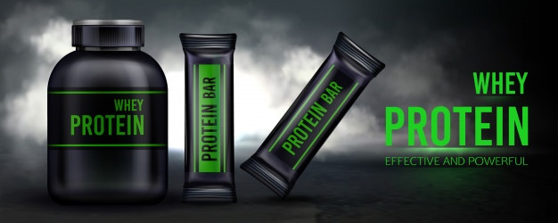

Dowiedz się więcej
BMI - To wskaźnik masy ciała, powstały przez podzielenie masy ciała podanej w kilogramach przez kwadrat wysokości podanej w metrach. Klasyfikacja wskaźnika BMI została opracowana wyłącznie dla dorosłych i nie może być stosowana u dzieci.
